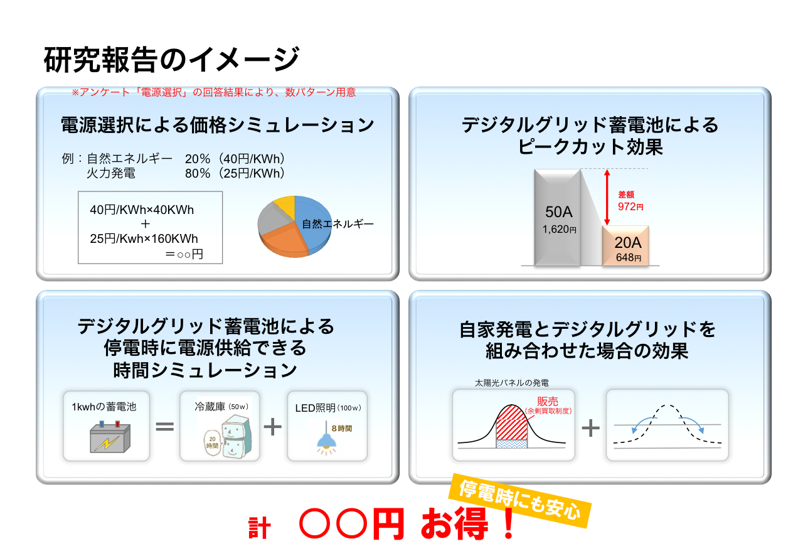
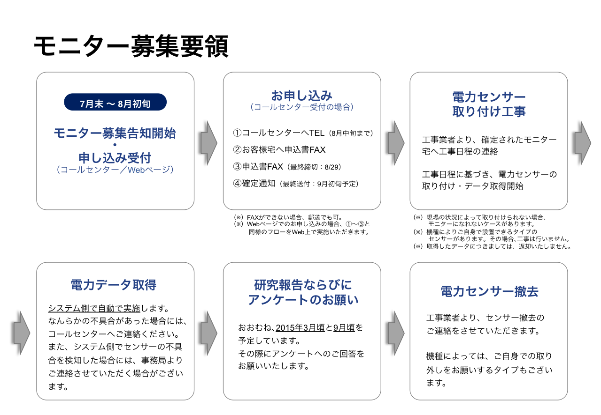
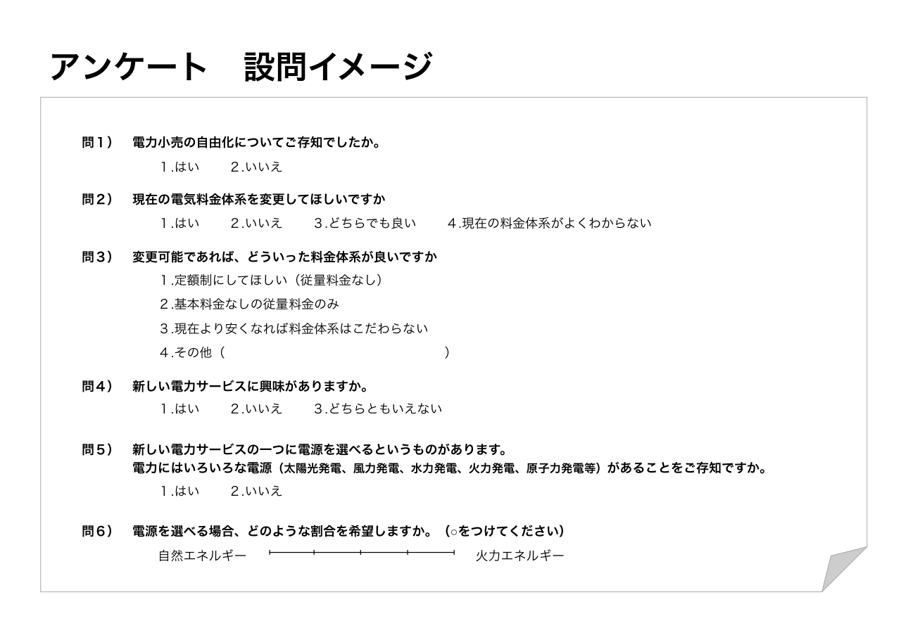

実証実験の目的
皆様から頂戴した電力需要データは、デジタルグリッドを用いたサービス設計に活用します。
例えば...
- 電源選択が可能となる将来における、電力価格シミュレーション
- 蓄電池を活用した電力ピークカット (基本料金の低減を見込んでおります)
- 蓄電池による、停電時の電源供給
- 自家発電とデジタルグリッドを組み合わせた運用 (FIT余剰買取制度下における売電量の増加を図ります)

設置する機器
ルーター、電力センサー、蓄電池を設置いたします。
- ***
- ***
No Image
スケジュール
以下のスケジュールを予定しております。
- 2014年9月頃
- 参加者を確定します。
- 2014年9月 ~
- 順次、デジタルグリッド関連設備の設置工事をします。
- 2015年3月頃
- 実証実験の中間報告を予定しています。
- 2015年9月頃
- 実証実験の最終報告を予定しています。
- 2015年9月 ~
- 順次、デジタルグリッド関連設備の撤去工事をします。

実証実験に参加できる方
2014年9月から2015年9月までの1年間、福島県郡山市にご在住の家庭のみ対象です。その他の地域にご在住の方、工場やサービス業など家庭以外の方は、ご参加できません。
1年間の電力需要データ取得の他に、以下の作業にご協力いただく予定です。
- プロフィールのご提供 (家族構成など)
- 電力センサーの取り付け (工事が必要になります)
- アンケート記入 (計2回予定 (中間・最終))
